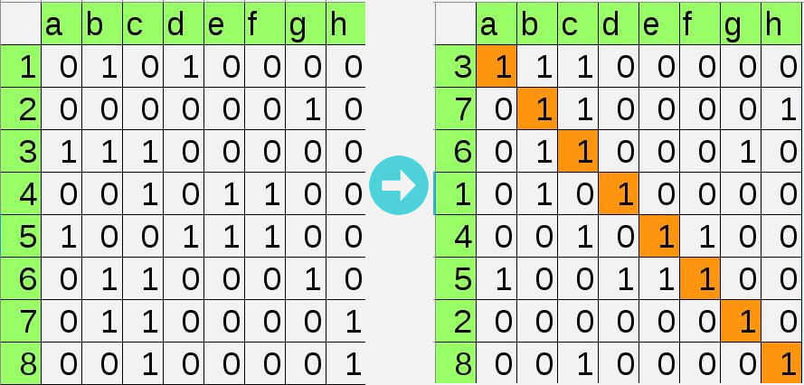

Problema 1.
Teniendo una matriz de ocurrencia como la mostrada, definir un algoritmo mediante el cual se pueda tener la diagonal completamente llena de "unos" trasladando solamente filas de la matriz.

Explicación Problema 1
Se usará el algoritmo Tarjan para identificar los bloques de ecuaciones que resolverá el programa. Este algoritmo requiere que cada ecuación se relacione con una de las variables. Las matrices de ocurrencia de la imagen anterior muestra con un 1 cuando la variable (a-h) está incluída en la ecuación (1-8). Organizando en diagonal los 1's le dejamos a cada ecuación una variable asignada (la conjunción de los cuadrados naranjas)